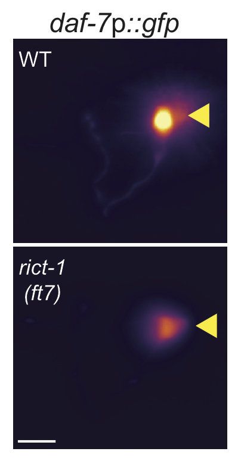
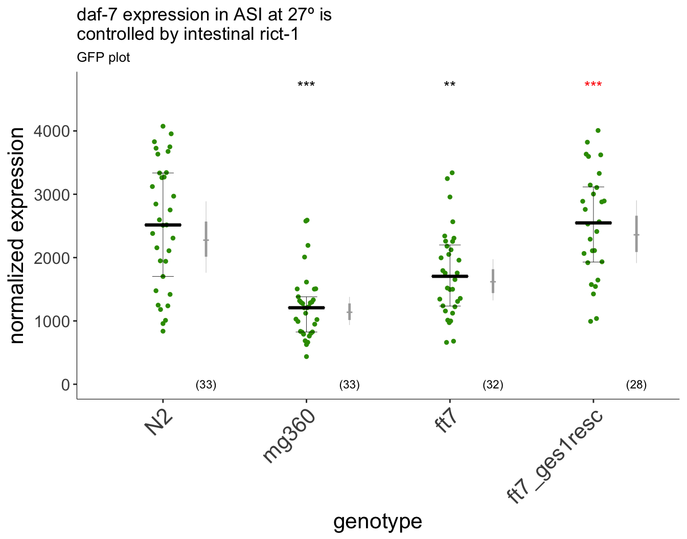

Figure 2
Figure 2 Intestinal mTORC2 regulates sensory neuron state
2A
strains<-c("N2","mg360","ft7","ft7_ges1resc")
dates<-c("10_22_16", "11_9_16", "11_23_16") #dropped "12_6_16" due to missingness
d7GFP<-read.csv(file.path(pathname,"extdata/2A_3A_daf7GFP.csv")) %>% filter(mean!=4095 & genotype %in% strains & date %in% dates & temp == "27" & food == "OP50") %>% mutate(genotype = factor(genotype, levels=strains), ID = as.character(ID)) %>%
separate(ID, c("ID.A", "ID.B"), sep = ":", extra = "drop") %>%
mutate(genoID = paste(date, genotype, ID.A, sep = ":"), cell.norm = mean) #genoID is animal, 2 cells per animal measured.
df <- d7GFP %>% group_by(date, genotype, genoID) %>% summarise(cell.norm = mean(cell.norm)) # take mean of each worm
### Linear models ###
log.tran<-lsmeans::make.tran(type="genlog", param = c(0,10))
lmm2<-with(log.tran, lmer(linkfun(cell.norm) ~ genotype + (1|date) + (1|genotype:date), data = df))
lm <- with(log.tran, lm(linkfun(cell.norm) ~ genotype, data = df))
stanlmer <- with(log.tran, rstanarm::stan_lmer(linkfun(cell.norm) ~ genotype + (1|date) + (1:genotype:date),
data = df,
chains = 3,
cores =4,
seed = 2000,
iter=6000,
control = list(adapt_delta=0.99)))
### compare ft7 to rescue H0, ft7 = ft7_resc ###
rescue.test <- d7GFP %>% subset(genotype %in% c("ft7", "ft7_ges1resc")) %$% with(log.tran, t.test(linkfun(cell.norm) ~ genotype))
rescue.p <- data.frame(p.value = rescue.test$p.value) %>% dauergut::prange()
#H0, all genotypes = N2
contrasts<-dauergut::dunnett_contrasts(lm, ref.index = 1, "genotype")## [1] "interaction term not indicated"mixed <- stanlmer %>% getStan_CIs(type = "log", base = 10)
plot.contrasts<-c("",contrasts$prange[1:2],"")
plot.contrasts.2 <- c("", "", "", rescue.p$prange)
p2<-dauergut::plot_CIs(df=df, title='daf-7 expression in ASI at 27º is
controlled by intestinal rict-1', plot.contrasts=plot.contrasts, plot.contrasts.2 = plot.contrasts.2, ypos = 4700, offset = 0, type = "GFP")
img.path <- file.path(pathname,"figures/2A_daf7GFP.png")
p2
2A. Intesinal rict-1 regulates daf7GFP levels in ASI neurons. L1 animals were grown 18hrs post egg lay at 27º. Daf-7::GFP fluorescence quantification shows decreased expression in rict-1 mutants. Intestinal expression of rict-1 using the intestinal ges-1 promoter rescues daf-7::GFP expression. Box and scatter plot show raw data. Bayesian 90% (grey) and 50% (red) credible intervals are shown on the right (see methods). For rict-1(mg360) and rict-1(ft7), *** and ** compared to N2, respectively. For ges-1 rescue, *** compared to rict-1(ft7). n=3 independent experiments.
knitr::kable(contrasts, caption="Pairwise comparisons from mixed-effects model (Tukey)")| contrast | estimate | SE | df | t.ratio | p.value | prange |
|---|---|---|---|---|---|---|
| mg360 - N2 | -0.3044202 | 0.0444226 | 122 | -6.8528183 | 0.0000000 | *** |
| ft7 - N2 | -0.1504361 | 0.0447683 | 122 | -3.3603231 | 0.0030194 | ** |
| ft7_ges1resc - N2 | 0.0151539 | 0.0463634 | 122 | 0.3268511 | 0.9772203 | p~0.98 |
knitr::kable(mixed[,c(6,1:5)], caption = "Bayesian credible intervals")| genotype | mean | lower.CL | upper.CL | lower.25 | upper.75 |
|---|---|---|---|---|---|
| N2 | 2275.739 | 1761.2710 | 2888.819 | 2014.048 | 2569.422 |
| mg360 | 1136.878 | 935.5569 | 1379.605 | 1014.621 | 1276.525 |
| ft7 | 1618.394 | 1324.9295 | 1974.714 | 1439.280 | 1816.943 |
| ft7_ges1resc | 2360.091 | 1913.6245 | 2904.107 | 2088.122 | 2661.336 |
2B
daf7FISH<-read.csv("extdata/2B_daf7FISH_4frames.csv") %>%
separate(Label, c("method","group","sample"),sep = c("-"), extra = "drop") %>%
separate(sample, c("sample", "type"),sep =":", extra = "drop") %>%
mutate(genotype = data.frame(do.call(rbind, strsplit(as.vector(group), split = "daf7_mRNA_L1_27d_")))[,2]) %>%
mutate(ID = interaction(genotype, sample)) %>%
mutate(genotype = factor(genotype, levels = c("N2", "ft7", "mg360", "mg360resc")))
#measured background fluorescence of each of 4 frames to normalize the sum projection of the neuron
#merge to add mean background value to each row:
background <- filter(daf7FISH, type == "background") %>% dplyr::select(ID, mean)
colnames(background) <- c("ID", "background")
cells<-dplyr::filter(daf7FISH, type == "cell") %>% dplyr::select(ID, sample, mean, genotype)
colnames(cells) <- c("ID", "sample", "cell.mean", "genotype")
daf7FISH <- merge(cells, background,by="ID") %>%
mutate(cell.norm = cell.mean - mean(background),
cell.diffnorm = cell.mean - background,
cell.ratioNorm = cell.mean / background)#simple lm
lm<-lm(data=daf7FISH, formula=cell.norm~genotype)
#check for outliers
daf7FISH <- dauergut::flag_outliers(lm, daf7FISH, threshold = 4, noplot = TRUE)
lm.0<-lm(data=daf7FISH[daf7FISH$outlier.status == FALSE,], formula=cell.norm~1)
lm.1<-lm(data=daf7FISH[daf7FISH$outlier.status == FALSE,], formula=cell.norm~genotype)
#anova(lm.0, lm.1) p ~ 0.013
stanlm <- stan_glm(cell.norm ~ genotype, data = daf7FISH[daf7FISH$outlier.status == FALSE,])##
## SAMPLING FOR MODEL 'continuous' NOW (CHAIN 1).
##
## Chain 1, Iteration: 1 / 2000 [ 0%] (Warmup)
## Chain 1, Iteration: 200 / 2000 [ 10%] (Warmup)
## Chain 1, Iteration: 400 / 2000 [ 20%] (Warmup)
## Chain 1, Iteration: 600 / 2000 [ 30%] (Warmup)
## Chain 1, Iteration: 800 / 2000 [ 40%] (Warmup)
## Chain 1, Iteration: 1000 / 2000 [ 50%] (Warmup)
## Chain 1, Iteration: 1001 / 2000 [ 50%] (Sampling)
## Chain 1, Iteration: 1200 / 2000 [ 60%] (Sampling)
## Chain 1, Iteration: 1400 / 2000 [ 70%] (Sampling)
## Chain 1, Iteration: 1600 / 2000 [ 80%] (Sampling)
## Chain 1, Iteration: 1800 / 2000 [ 90%] (Sampling)
## Chain 1, Iteration: 2000 / 2000 [100%] (Sampling)
## Elapsed Time: 0.109359 seconds (Warm-up)
## 0.08403 seconds (Sampling)
## 0.193389 seconds (Total)
##
##
## SAMPLING FOR MODEL 'continuous' NOW (CHAIN 2).
##
## Chain 2, Iteration: 1 / 2000 [ 0%] (Warmup)
## Chain 2, Iteration: 200 / 2000 [ 10%] (Warmup)
## Chain 2, Iteration: 400 / 2000 [ 20%] (Warmup)
## Chain 2, Iteration: 600 / 2000 [ 30%] (Warmup)
## Chain 2, Iteration: 800 / 2000 [ 40%] (Warmup)
## Chain 2, Iteration: 1000 / 2000 [ 50%] (Warmup)
## Chain 2, Iteration: 1001 / 2000 [ 50%] (Sampling)
## Chain 2, Iteration: 1200 / 2000 [ 60%] (Sampling)
## Chain 2, Iteration: 1400 / 2000 [ 70%] (Sampling)
## Chain 2, Iteration: 1600 / 2000 [ 80%] (Sampling)
## Chain 2, Iteration: 1800 / 2000 [ 90%] (Sampling)
## Chain 2, Iteration: 2000 / 2000 [100%] (Sampling)
## Elapsed Time: 0.104206 seconds (Warm-up)
## 0.089136 seconds (Sampling)
## 0.193342 seconds (Total)
##
##
## SAMPLING FOR MODEL 'continuous' NOW (CHAIN 3).
##
## Chain 3, Iteration: 1 / 2000 [ 0%] (Warmup)
## Chain 3, Iteration: 200 / 2000 [ 10%] (Warmup)
## Chain 3, Iteration: 400 / 2000 [ 20%] (Warmup)
## Chain 3, Iteration: 600 / 2000 [ 30%] (Warmup)
## Chain 3, Iteration: 800 / 2000 [ 40%] (Warmup)
## Chain 3, Iteration: 1000 / 2000 [ 50%] (Warmup)
## Chain 3, Iteration: 1001 / 2000 [ 50%] (Sampling)
## Chain 3, Iteration: 1200 / 2000 [ 60%] (Sampling)
## Chain 3, Iteration: 1400 / 2000 [ 70%] (Sampling)
## Chain 3, Iteration: 1600 / 2000 [ 80%] (Sampling)
## Chain 3, Iteration: 1800 / 2000 [ 90%] (Sampling)
## Chain 3, Iteration: 2000 / 2000 [100%] (Sampling)
## Elapsed Time: 0.101312 seconds (Warm-up)
## 0.093036 seconds (Sampling)
## 0.194348 seconds (Total)
##
##
## SAMPLING FOR MODEL 'continuous' NOW (CHAIN 4).
##
## Chain 4, Iteration: 1 / 2000 [ 0%] (Warmup)
## Chain 4, Iteration: 200 / 2000 [ 10%] (Warmup)
## Chain 4, Iteration: 400 / 2000 [ 20%] (Warmup)
## Chain 4, Iteration: 600 / 2000 [ 30%] (Warmup)
## Chain 4, Iteration: 800 / 2000 [ 40%] (Warmup)
## Chain 4, Iteration: 1000 / 2000 [ 50%] (Warmup)
## Chain 4, Iteration: 1001 / 2000 [ 50%] (Sampling)
## Chain 4, Iteration: 1200 / 2000 [ 60%] (Sampling)
## Chain 4, Iteration: 1400 / 2000 [ 70%] (Sampling)
## Chain 4, Iteration: 1600 / 2000 [ 80%] (Sampling)
## Chain 4, Iteration: 1800 / 2000 [ 90%] (Sampling)
## Chain 4, Iteration: 2000 / 2000 [100%] (Sampling)
## Elapsed Time: 0.111333 seconds (Warm-up)
## 0.086007 seconds (Sampling)
## 0.19734 seconds (Total)strains <- levels(daf7FISH$genotype)
contrasts <- dauergut::dunnett_contrasts(lm.1,ref.index = 1,"genotype")## [1] "interaction term not indicated"mixed <- stanlm %>% dauergut::getStan_CIs()
rescue.test <- daf7FISH[daf7FISH$outlier.status == FALSE,] %>% subset(genotype %in% c("mg360", "mg360resc")) %$% t.test(cell.norm ~ genotype)
rescue.p <- data.frame(p.value = rescue.test$p.value) %>% dauergut::prange()
plot.contrasts <- c("", contrasts$prange[1:2],"")
plot.contrasts.2 <- c("", "", "", rescue.p$prange)
dauergut::plot_CIs(daf7FISH[daf7FISH$outlier.status == FALSE,], title = "daf7 mRNA is reduced in rict-1 mutants", plot.contrasts = plot.contrasts, plot.contrasts.2 = plot.contrasts.2, ypos = 150, offset = 0, type = "expression")
2B. Daf-7 mRNA is reduced in rict-1 mutants. Animals were grown 18hrs post egg lay at 27º, then fixed prior to FISH. Intestinal expression of rict-1 using the intestinal ges-1 promoter rescues daf-7 expression. Box and scatter plot show raw data. Bayesian 90% (grey) and 50% (red) credible intervals are shown on the right (see methods). For rict-1(mg360) and rict-1(ft7), p~0.04 and p~0.032 compared to N2, respectively. For ges-1 rescue, p~0.038 compared to rict-1(ft7). n=2 independent experiments, pooled data. 2 outlier data points were removed in total.